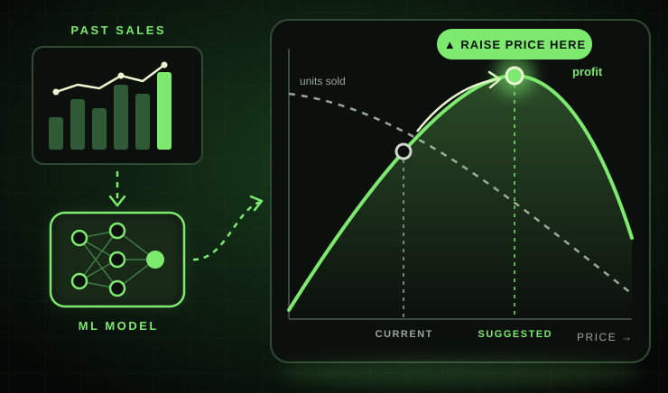

Price Optimization Model
A machine learning model that learns from historical pricing data and suggests price changes that increase profit.
- In use every week, suggesting price adjustments based on past sales
- Paired with a data cleanup algorithm that saves about 5–7 hours of work a week
- Keeps sales high while raising the price per unit
- Finds the price where profit is highest